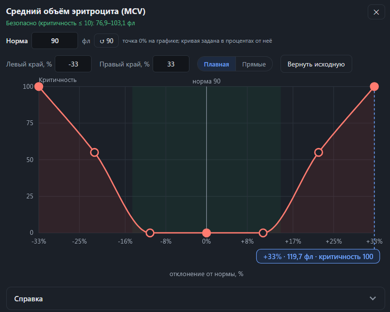

Открытый вычислитель дифференциальной диагностики: анализы, жалобы и данные осмотра на входе, 3–4 вероятных диагноза с процентами на выходе.
Каждый шаг расчёта — явная формула, и для каждого диагноза видно, какой показатель сколько добавил к вероятности. Искусственный интеллект используется для заполнения данных и трактовки рассчитанных выводов, но не внутри самого расчёта.
Исследовательский проект. Не медицинское изделие, не для самодиагностики и не для лечебных решений. Все коэффициенты пока условные. Юридическая оговорка — в репозитории: DISCLAIMER.md.
Сайт: andre4561.github.io/electrodoctor · репозиторий: GitHub. Контекст для ИИ-агентов — AGENTS.md.

Врач или исследователь может задать для каждого анализа своё значение нормы и поправить кривую критичности — глобально в Настройки → Нормы и веса (там же каталог анализов) или отдельно у конкретного пациента; личная настройка перекрывает общую.
балл = logit(исходная частота) + сумма вкладов, P = 1 / (1 + e^−балл).Файлы в docs/data/:
labs.json — каталог анализов (коды, синонимы, группа по материалу; правки и новые коды — в кабинете: Настройки → Нормы и веса)norms.json — нормы и кривые критичностиsigns.json — признаки диагнозов и весаdiagnoses.json — разделы специальностей и список диагнозовВ Нормах и весах у названия показателя — цифра «в скольких диагнозах»; клик открывает список со ссылками сразу в редактор признаков этого диагноза.
Форматы: data-format. Дорожная карта: roadmap. Задачи и аудит — в корне репозитория (TODO.md, AUDIT.md).
Нужен Python 3. Сайт лежит в docs/ — файлы с диска открывать не надо.
Самый простой способ: дважды щёлкните открыть-сайт.bat в корне проекта. Он поставит пакет markdown при необходимости, запустит сервер и откроет браузер.
Или вручную:
pip install markdown python tools/preview.py # → http://localhost:8000/
Кабинет: http://localhost:8000/app/#/clients
Подробнее локально — файл Читать.md в корне репозитория.
electrodoctor/ ├── AGENTS.md контекст проекта для ИИ-агентов ├── AUDIT.md playbook аудита (только проверка) ├── TODO.md текущие задачи ├── DISCLAIMER.md ограничения и предупреждения ├── CONTRIBUTING.md как предлагать веса, диагнозы, код ├── Читать.md как открыть сайт локально ├── открыть-сайт.bat запуск локального сервера ├── src/app/ кабинет (TypeScript) ├── docs/ сайт (GitHub Pages); *.js собираются из src/ │ ├── index.html главная │ ├── help.html редирект → help.ru / help.en │ ├── help.ru.html помощь (русский) │ ├── help.en.html help (English draft) │ ├── app/ кабинет в браузере │ ├── data/ данные расчёта (JSON) │ └── articles/ статьи (Markdown) ├── audit/ шаблон и отчёты аудита ├── tests/ тесты └── tools/ просмотр сайта и конвейер данных
На хостинг уходит готовая статика (как локальный tools/preview.py), не сырой Markdown и не сборка Jekyll. GitHub Pages может отдавать docs/ с main; боевой корень обновляется отдельно.
python tools/build_site.py # HTML из статей + архивы в tools/out/ python tools/ftp_upload_zip.py # заливает electrodoctor-site.tar.gz по FTP
Учётка FTP — в secrets/ftp.json (не в git). В панели хостинга распаковать electrodoctor-site.tar.gz в корень сайта. Zip для кириллических имён на части хостингов ломается — предпочтителен tar.gz. Подробности — в AGENTS.md.
Код — GNU AGPL v3, данные и документация — CC BY-SA 4.0.